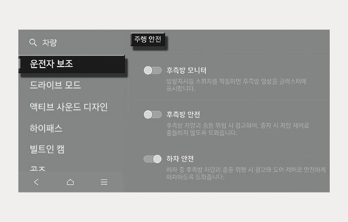

안전 하차 경고 설정
하차 안전

2C_ExitSafetySettings
시동 'ON' 상태에서 인포테인먼트 시스템의 설정 → 운전자 보조 → 주행 안전 → 하차 안전 을 차례로 선택하십시오. 안전 하차 경고가 켜집니다.

2C_ExitSafetySettings
시동 'ON' 상태에서 인포테인먼트 시스템의 설정 → 운전자 보조 → 주행 안전 → 하차 안전 을 차례로 선택하십시오. 안전 하차 경고가 켜집니다.